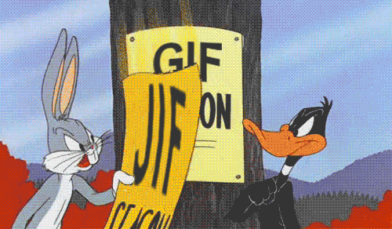

How to Pronounce
Simple Questions
"Hard-G" Support
Support for the Hard-G
Are we still arguing about this?? Wake up! It uses a hard-G.

Sources and extra reading material for the unconverted
howtoreallypronouncegif.com
A linguists POV - languagejones.com
Definition and pronunciation audio - dictionary.cambridge.org
Jif Brand thoughts - jif.com
The most important source, me!